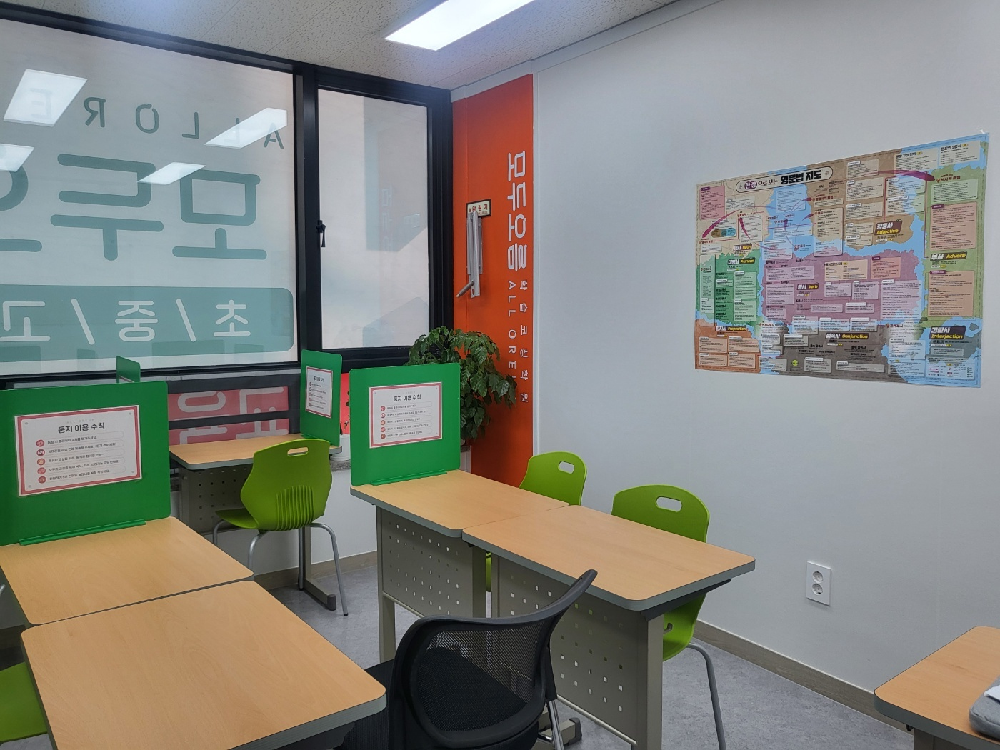
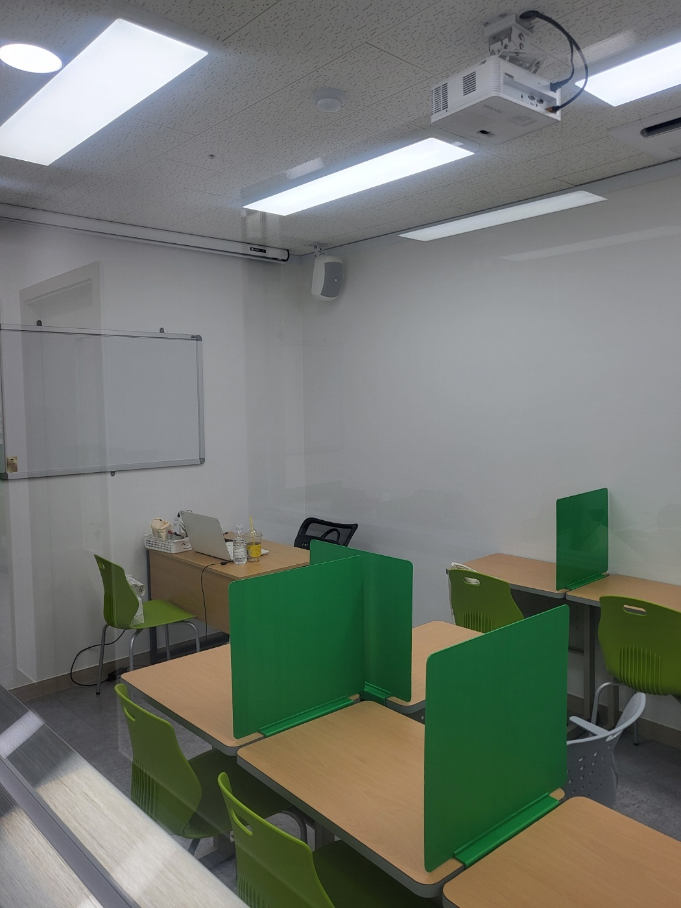
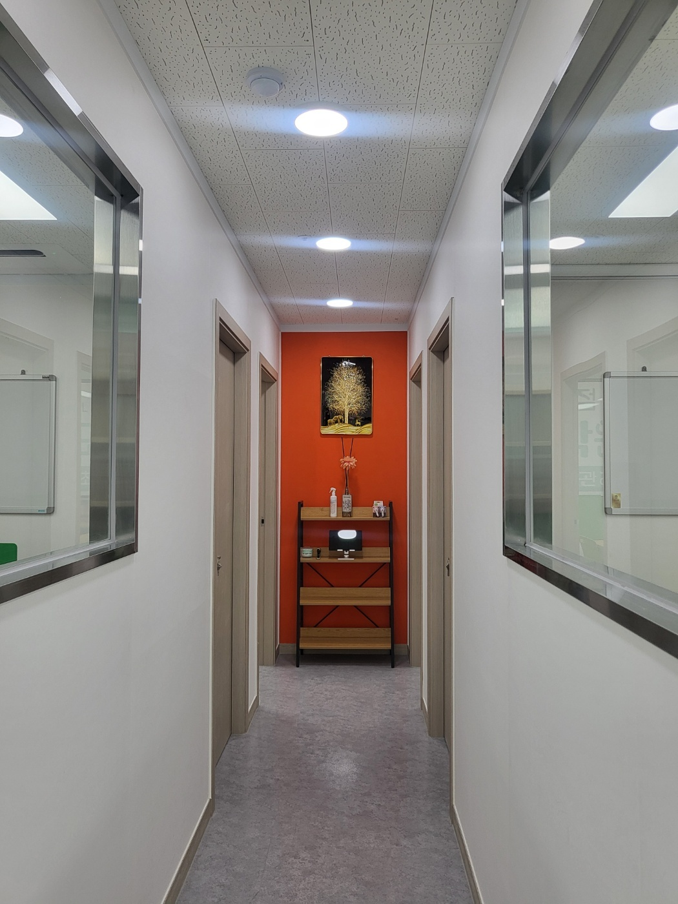
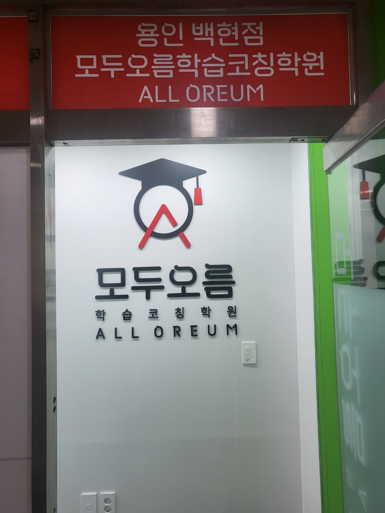

안녕하세요, 경기도 용인시 기흥구 동백동의 와와학습코칭 용인백현점입니다. 백현마을 한가운데 자리한 센터로, 동막초등학교(동막초)·동백초등학교(동백초)·용인백현초등학교(백현초) 아이들이 동백중학교(동백중)·용인백현중학교(백현중)를 거쳐 동백고등학교(동백고)·용인백현고등학교(백현고)로 이어지는 동네입니다.
오늘은 교실 벽에 붙은 종이 한 장 이야기를 해 보려 합니다. 위 사진 오른쪽 벽, 한 장으로 보는 영문법 지도입니다.
왜 목차가 아니라 지도 모양일까요
가까이 보시면 이 종이는 목록이 아닙니다. 한반도 지도처럼 생긴 그림 위에 명사·대명사·동사·형용사·부사·전치사·접속사·감탄사가 색깔별 ‘지역’으로 나뉘어 있고, 그 안에 각 품사가 문장에서 하는 일이 적혀 있습니다.
굳이 이렇게 만든 이유가 있습니다. 아이들 머릿속에서 문법은 대개 ‘줄 세운 목록’으로 들어가기 때문입니다.
중학교 영어 교재는 단원마다 문법을 하나씩 다룹니다. 3단원 현재완료, 5단원 관계대명사, 7단원 분사. 아이는 그 단원을 공부할 때는 압니다. 시험도 봅니다. 그런데 학년이 올라가고 단원이 쌓이면 이렇게 됩니다.
- 현재완료는 안다 — 그런데 그게 동사 이야기인지, 시제 이야기인지, 문장 전체 구조 이야기인지는 설명하지 못합니다.
- 관계대명사는 외웠다 — 그런데 처음 보는 긴 문장에서 관계대명사가 나오면 어디서부터 어디까지가 한 덩어리인지 못 자릅니다.
- 결국 문법은 아는데 문장은 못 읽는 상태가 됩니다.
낱개로 배운 것들이 서로 어떻게 연결되는지를 한 번도 보지 못했기 때문입니다. 지도 모양으로 만들어 벽에 붙여 둔 건, 아이가 고개를 들었을 때 지금 배우는 것이 전체의 어디쯤인지 눈으로 확인하게 하려는 것입니다.
고등학교로 넘어갈 때 여기서 벌어집니다
동백중학교·용인백현중학교에서 동백고등학교·용인백현고등학교로 올라간 아이들을 보면, 영어에서 힘들어하는 지점이 꽤 비슷합니다.
중학교 시험은 배운 범위 안에서 나옵니다. 이번 시험은 3단원까지, 지문은 교과서 본문. 그래서 단원별로 외우는 방식이 통합니다.
고등학교는 다릅니다. 처음 보는 지문이 나오고, 그 안에 중학교 3년 치 문법이 섞여서 한 문장에 들어 있습니다. 이때 필요한 건 ‘이 문법을 아느냐’가 아니라 이 문장을 어디서 끊어야 하느냐입니다. 그건 문법을 목록으로 외운 아이가 하기 어려운 일입니다.
그래서 저희가 아이에게 자주 시키는 것이 지도에서 짚어 보기입니다. 오늘 틀린 문장을 가져와서 묻습니다. 이 문장에서 진짜 동사는 어느 거야? 이 덩어리는 앞의 무슨 말을 꾸미고 있어? 아이가 손가락으로 벽의 지도를 짚어 가며 답하면, 그때부터 문법이 ‘외운 것’에서 쓰는 것으로 넘어갑니다.

설명을 듣는 자리와 혼자 푸는 자리가 한 방에 있습니다
위 사진 교실을 보시면 조금 특이한 점이 있습니다. 천장에 빔 프로젝터가 달려 있고 벽에 화이트보드가 있는데, 정작 책상에는 칸막이가 세워져 있습니다. 설명하는 교실과 혼자 공부하는 자습실이 한 공간에 겹쳐 있는 모양입니다.
이게 저희 수업이 돌아가는 방식이라서 그렇습니다. 설명을 한 시간 내내 듣고 집에 가서 혼자 푸는 구조가 아닙니다.
- 설명은 짧게 — 화이트보드와 프로젝터 쪽을 보게 하고 개념을 짚습니다.
- 바로 그 자리에서 풀게 — 아이가 칸막이 안으로 몸을 돌려 방금 들은 것을 직접 풉니다.
- 막히면 그 자리에서 잡습니다 — 선생님 자리가 같은 방 안에 있는 이유입니다.
부모님들께 자주 드리는 말씀이 있습니다. 이해했다는 느낌과 풀 수 있다는 것은 전혀 다른 일입니다. 설명을 들을 때 아이는 거의 항상 이해했다고 느낍니다. 선생님이 정리해 준 길을 따라가기만 하면 되기 때문입니다. 그런데 혼자 앉아서 첫 줄을 쓰려는 순간 막힙니다.
그 간격이 드러나는 곳이 집이면 손을 쓸 수 없습니다. 아이는 그냥 덮고, 부모님은 다 했다는 말만 듣습니다. 그래서 막히는 장면을 센터 안에서 만들어 놓는 것입니다.

교실마다 유리창을 낸 이유
복도 사진입니다. 양쪽으로 교실이 늘어서 있고, 교실마다 복도 쪽으로 유리창이 나 있습니다.
감시하려고 낸 창이 아닙니다. 아이가 어떤 상태인지 문을 열지 않고 알 수 있게 하려고 낸 창입니다.
수업 중에 문이 열리면 그 방 아이들 전부의 집중이 한 번 끊깁니다. 그런데 관리를 안 하면 아이는 30분씩 같은 문제 앞에 멈춰 있습니다. 지나가면서 한 번 보면, 펜이 움직이고 있는지 멈춰 있는지가 보입니다. 멈춰 있는 아이만 조용히 들어가 봅니다.
교실을 큰 방 하나로 쓰지 않고 작게 나눈 것도 같은 이유입니다. 학년과 과목이 다른 아이들이 한 공간에 섞여 있으면, 한 아이에게 설명하는 소리가 다른 아이의 자습을 방해합니다. 방을 나누면 설명하는 소리와 혼자 푸는 시간이 부딪히지 않습니다.
집에서 오늘부터 해 보실 수 있는 것
- “오늘 뭐 배웠어?” 대신 “오늘 배운 거 한 문장으로 설명해 줄래?” — 배운 내용을 말로 옮기지 못하면 아직 내 것이 아닙니다. 1분이면 확인됩니다.
- 영어 문장 하나를 놓고 동사부터 찾게 해 보세요 — 해석부터 시키지 마시고, 이 문장의 진짜 동사가 뭔지만 짚게 해 보세요. 이게 안 되면 단어를 아무리 외워도 긴 문장은 못 읽습니다.
- 문법 노트를 단원 순서가 아니라 품사별로 묶어 보게 하세요 — 3단원·5단원으로 나뉘어 있는 걸 동사 관련 / 명사 관련으로 다시 모으는 것만으로도 머릿속 지도가 생깁니다.
- 틀린 문제를 모아 두게 하세요 — 새 문제집을 사는 것보다, 지난 시험에서 틀린 문장을 다시 꺼내 읽는 쪽이 고등학교 영어에는 훨씬 도움이 됩니다.

용인백현점 찾아오시는 길
와와학습코칭 용인백현점은 경기도 용인시 기흥구 동백7로 83, 백현마을중앙프라자 2층 208호에 있습니다. 간판에는 와와의 형제 브랜드인 모두오름 학습코칭학원으로 표기되어 있으니, 찾아오실 때 참고해 주세요. 동막초등학교·동백초등학교·용인백현초등학교와 동백중학교·용인백현중학교, 동백고등학교·용인백현고등학교 학생들이 오가기 좋은 자리입니다.
학습 진단과 상담은 무료입니다. 오실 때 아이가 최근에 본 영어 시험지나 오답이 남은 문제집이 있으면 함께 가져와 주세요. 어느 문장에서 손이 멈췄는지만 봐도, 단어가 문제인지 구조가 문제인지 같이 짚어 드릴 수 있습니다.